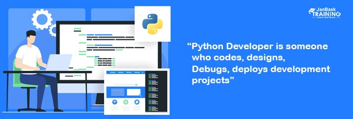

Python Developer
Who are Python Developers?
Python developers design, code, and deploy development projects in the Python language. They also work on debugging those same projects to ensure they function as intended. As a python developer, you'll work closely with other teams, including data collection and analytics, to help answer questions and provide insight. Some of the projects you could work on span everything from application development to machine learning and AI. Becoming proficient in Python and its uses opens the door to job possibilities in various industries. Ultimately, your role and responsibilities will likely vary depending upon the industry and organization that you find yourself working within.
Role of python developers
Python developers are some of the most sought-after talent in the industry. Today, we’ll look into the primary Python developer responsibilities and their role in software development. Python has always been a top choice for businesses to use. Its simplicity and no-frills concept make it ideal for companies to leverage. It’s easy to learn, so Python developers can get as creative as possible with their work. The language can also be applied to more complex projects. Therefore, in theory, businesses would be able to scale and innovate efficiently with Python experts.
Even though Python is a relatively simple language, Python developers still have to manage a wide range of technical concepts. In fact, there’s actually a significant list of Python developer responsibilities that many are unfamiliar with.
How to become a Python Developer ?
To keep up with technological advancement, you’ve to stay updated with the latest trends it follows. All your morning-to-night scrolls done on an application is dependent on a programming language. Python has proved itself better in all its ways be it its versatility, simplicity, and flexibility. Now you must be asking How to become a Python Developer? But before that, you should have knowledge about Python first. Python is indeed a very demanding and easy language in which everyone wants to grow his/her career. It has also been the most used language with a percentage of 48.24% globally. Since developers are running the world, let’s move ahead and understand the role of a Python developer. Also, the question which every individual has “How to Become a Python Developer?”, is explained well in this article
Skill Required To become a Python Developer
Let us start our Pyhton Development Course
1. Python
What is Python ?
Python is a programming language that is interpreted, object-oriented, and considered to be high-level too. What is Python? Python is one of the easiest yet most useful programming languages which is widely used in the software industry. People use Python for Competitive Programming, Web Development, and creating software. Due to its easiest syntax, it is recommended for beginners who are new to the software engineering field. Its demand is growing at a very rapid pace due to its vast use cases in Modern Technological fields like Data Science, Machine learning, and Automation Tasks. For many years now, it has been ranked among the top Program
Now we will learn complete DSA(data structure alogorithm) of Python
2. Fast Api (The latest Python Framewok)
What is Fast Api Framework do ?
FastAPI is a modern web framework that is relatively fast and used for building APIs with Python 3.7+ based on standard Python-type hints. FastAPI also assists us in automatically producing documentation for our web service so that other developers can quickly understand how to use it. This documentation simplifies testing web service to understand what data it requires and what it offers. FastAPI has many features like it offers significant speed for development and also reduces human errors in the code. It is easy to learn and is completely production-ready. FastAPI is fully compatible with well-known standards of APIs (i.e. OpenAPI and JSON schema).
Let us learn full course of Fast Api Framework
Features of Fast Api :
3. Portfolio Website of Project
What is portfolio ?
A portfolio website is a unique platform that allows you to showcase your work and tell others about yourself. It’s like an online business card or CV that can help you find partnerships, show off your work, and even land your first job.
Let us learn that how you can create your own Portfolio Website
We hope that now you can easily create a Portfolio website by seeing this video
Comments